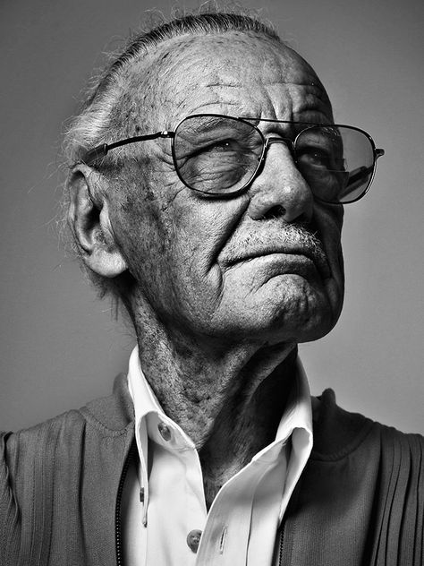

Who is Stan Lee

Stan Lee (December 28, 1922 - November 12, 2018) was an American comic book writer, editor, publisher, and producer. He rose through the ranks of a family-run business to become the primary creative leader of Marvel Comics. With artists such as Jack Kirby and Steve Ditko, he co-created numerous iconic superheroes, including Spider-Man, the X-Men, Iron Man, Thor, the Hulk, Black Widow, and the Fantastic Four. Lee’s efforts helped expand Marvel Comics into a multimedia giant that dominates popular culture today.
"With great power comes great responsibility."
| Year | Creation | Collaborator |
|---|---|---|
| 1962 | Spider-Man | Steve Ditko |
| 1963 | X-Men | Jack Kirby |
| 1963 | Iron Man | Don Heck |
| 1966 | Black Panther | Jack Kirby |